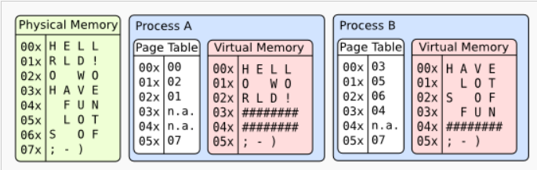

Кольца защиты
Каждая программа запускается с некоторым уровнем привелегий (информация о котором хранится в младших 2 битах регистра cs процессора), который может быть повышен и исключительных ситуациях. Программы, являющиеся частью операционной системы запускаются с уровнем привилегий 0 (наивысшим), пользовательские программы (userspace), запускаются с уровнем привилегий 3. Уровни привилегий 1 и 2 могут использоваться для исполнения драйверов внешних устройств (однако в современных ОС используются только кольца 0 и 3).
Привилегии колец:
Ring 0:
- Доступ к железу (port mapped IO, memory mapped IO)
- Служебные регистры (GDTR, IDTR, контрольные регистры)
- Служебные инструкции (lgdt, lidt, cli/sti, …)
Ring 3:
-
Доступ к инструкциям/регистрам общего назначения (полностью самостоятельно можно только пользоваться доступной памятью и что-то считать, за всем остальным придется звать ядро)
При исполнении кода из какого-либо сегмента, процессор смотрит в таблицу дескрипторов сегментов, и подгружает в cs номер дескриптора. Верхние 13 бит нового значения отвечают соответственно за этот самый номер в (GDT). В cs есть ещё 3 значащих бита(регистр 16-битный) - один бит локальности, по нему регистр понимает где смотреть дескрипторы, в локальной таблице дескрипторов (LDT), или в глобальной(GDT), и младшие 2 бита - TPL(Target privilege level). После загрузки номера дескриптора проверяется соответствие привилегий текущих и требуемых (CPL и TPR - current / target PL), и дескриптор загружается в кэш процессора.
Сегментация
При запуске Яблока создаются 4 базовых сегмента:
#define USER 3
#define KERNEL 0
#define UBASE 0xffff0000
// SEG(EFLAGS, base, offset, privilege level) - запись сегмента в GDT
void init_seg_desc(void) {
seg_desc[SEG_KCODE] = SEG(STA_X|STA_R, 0, 0xffffffff, KERNEL)
seg_desc[SEG_KDATA] = SEG(STA_W, 0, 0xffffffff, KERNEL)
seg_desc[SEG_UCODE] = SEG(STA_X|STA_R, UBASE, 0xffffffff - UBASE, USER)
seg_desc[SEG_UDATA] = SEG(STA_W, UBASE, 0xffffffff - UBASE, USER)
}
// соответственно, физический адрес памяти вычисляется следующим образом:
// base + SEG_OFFSET
Обработка прерываний
При возникновении прерывания (аппаратного или программного), процессору надо повысить свой уровень привилегий, обработать прерывание, а после понизить его обратно.
Псевдокод обработки прерывания:
vector X; ←- наш вектор прерываний
gate = idt[X]; <-- берём gate из таблицы прерываний по этому вектору
selector = gate.selector;
dpl = selector.pl; <-- уровень привилегий на котором должен быть обработан X
if cpl > dpl { // cpl - current privilege level
switch_stack();
change_privilege_level();
}
// обработка прерывания
Псевдо-реализация переключения стеков процессов:
- Сохраняем состояние программы (регистры) в стек
- Кладем в %esp верх другого стека
- С нового стека снимаем состояние программы (регистры) и продолжаем исполняться
Обработка прерываний в Яблоке:
void trap(registers_t *r) {
if(r->int_no == T_SYSCALL) { // отдельная проверка на системный вызов - частый частный случай прерывания
switch(r->eax) {
case SYS_exit:
if(r->ebx) {
kprinf("Success\n");
} else {
kprintf("Program finished with exit code %d\n", r->ebx);
}
killproc(); // переключение стека без сохранения текущего состояния
case SYS_greet:
kprintf("Hello world!\n");
r->eax = 0;
break;
default:
kprinf("Unknown syscall);
r->eax = -1;
break;
}
}
}
Системный вызов
инструкция int $0x84(Yabloko-specific, int $0x80 для Linux/i368) - обычное прерывание
%eax ← function
%ebx ← arg1
%ecx ← arg2
%edx ←arg3
Например, инструкция int $0x80 (системное прерывание 128), может вывести на экран строку, для этого в %eax должен быть номер функции (4 в данном случае), в
%ebx - файловый дескриптор (лучше перед вызовом проверить его валидность), в %ecx - адрес массива (не обязательно типа char), в %edx - sizeof() выводимого буффера.
// пример как может быть реализован тот же системный вызов write(...)
void print_string(int fd, char* str, int32_t length) {
asm volatile(
"mov $4, %eax \n"
"int $0x80 \n"
:
: "b"(fd), "c"(str), "d"(length)
: "eax" // indeed nessesary clobber
);
}
Виртуальная память
Страничная виртуальная память - отображение каждого “блока” памяти определенного размера на физическую память внутри процессора

- У каждого процесса свое отображение
- Стандартный размер страницы - 4KiB
- Первые 10 бит адреса - индекс page directory
- Вторые 10 бит - индекс в page table
- Оставшиеся 12 бит - смещение внутри страницы памяти
- Процессор может положить отображение в свой кэш(TLB - translation lookaside buffer) → отображение 20-битного префикса адреса на физический адрес памяти. Сбрасывается после переключения процесса